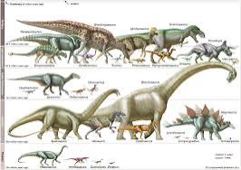
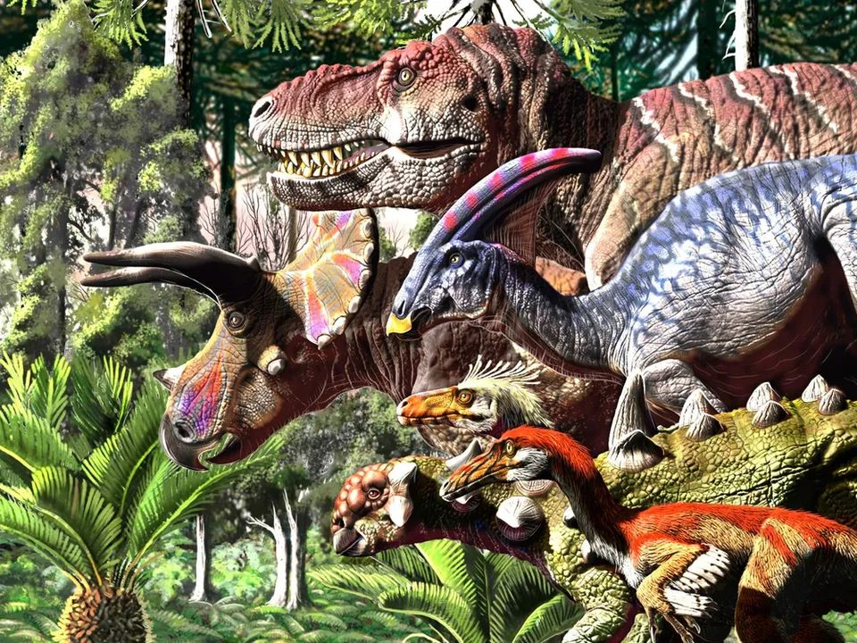
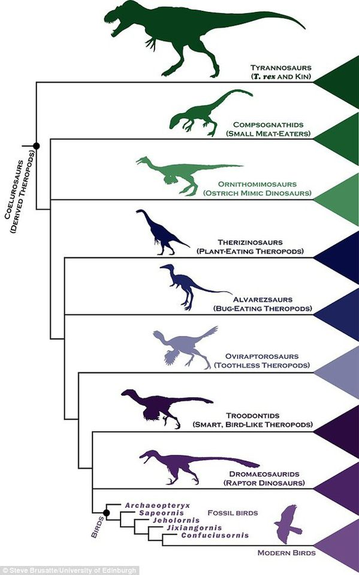
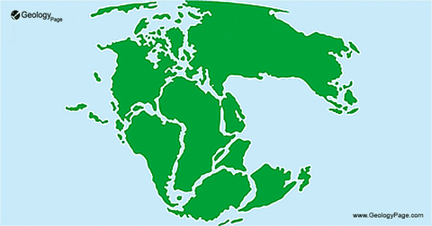

What about dinosaurs?
These famous animals lived between about 245 and 66 million years ago. They lived more than our young species Homo sapiens so far.
Dinosaur are prehistoric reptiles such as crocodiles and lizards, but their can be differentiate by their legs position respect to the ground.
Lizards have bones almost parallel to the ground, dinosaurs on the other hand.


Linking birds and dinosaurs
- -Wishbones
- -Feathers
- -Breastbones
- -Wrist that contain a crescent t-shaped bone
- -Hands like most other advanced theropods, with three fingers in which the middle finger is the longest

What is the furcula
It is a bone in front of a breastbone that is shape like a V and consist chiefly of two fused clavicles.
How show the relation between species?
There is something call phylogenies and is way to represent how every living species has some relative on the basis of the morphology.
